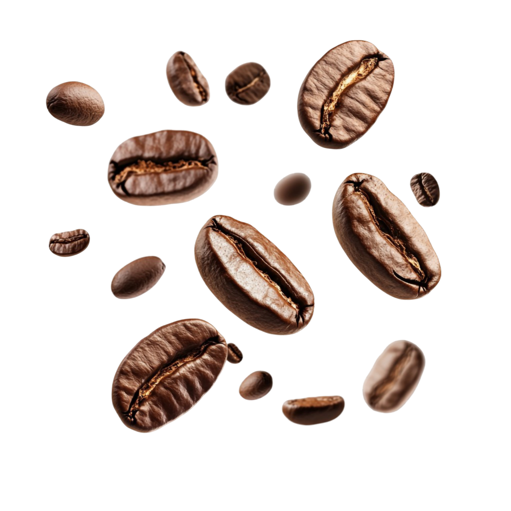
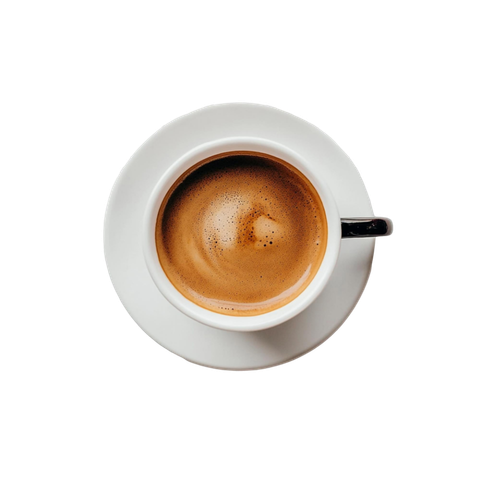
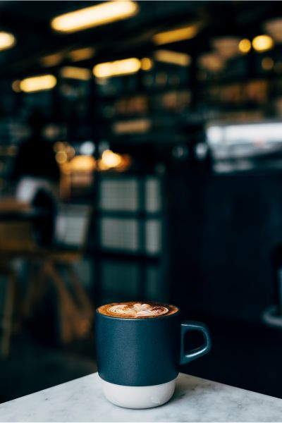

Descubra qual a sua receita favorita
Wired Coffee
Uma experiência pensada para quem quer ir além do café comum. Explore receitas, métodos e sabores que transformam o simples ato de fazer café em uma experiência completa.
Explorar Receitas

Wired Coffee, direto pra sua casa
Uma experiência pensada para quem quer ir além do café comum. Explore receitas, métodos e sabores que transformam o simples ato de fazer café em uma experiência completa.

Sobre a Wired Coffee
Mais do que café
A Wired nasceu com um propósito simples: transformar a forma como você prepara e entende o café.
Nosso objetivo é te guiar em uma jornada onde cada detalhe importa — do grão à xícara.
Descubra o que torna a Wired única: o compromisso em conectar você a um café de qualidade, com receitas selecionadas cuidadosamente para elevar cada experiência.